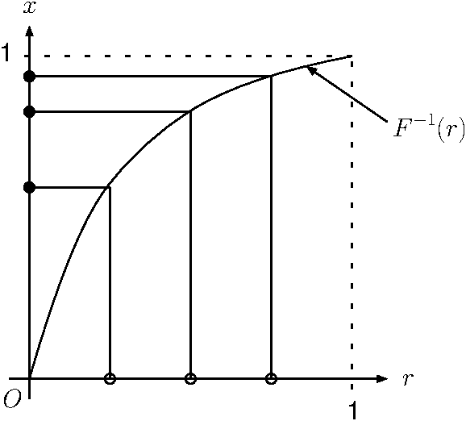

1 確率変数と確率密度
ある数列\(x_n\)を考えよう。いま、\(x_1, x_2, \cdots, x_n\)まで値が定まっているとき、 次の値\(x_{n+1}\)が確率的に決まるような変数を確率変数と呼ぶ。 また、それまでの値\(x_1, x_2, \cdots, x_n\)と\(x_{n+1}\)が全く無関係である場合、 この数を乱数と呼ぶ。サイコロを１０回振って出た目の履歴と、１１回目に出る目は 無関係であるので乱数であると言える。
確率変数\(X\)が連続変数であるとしよう。また、簡単のため、定義域が有界で、\(0 \le X \le 1\)でる場合のみを考える。 確率変数\(X\)が値\(x\)から\(x+{\mathrm d}x\)までの値をとる確率が \[P(x \le X < x +{\mathrm d}x) = f(x) {\mathrm d}x \] とあらわされるとき、関数\(f(x)\)を\(X\)の確率密度関数 (probability density function, PDF)と呼ぶ1。 ただし、関数\(f(x)\)は規格化条件 \[\int_0^1 f(x) {\mathrm d}x = 1\] を満たす。 この式を \[ P(X = x) = f(x)\] などと表現、理解しないようにしよう。式([eq_density2])は 「確率変数\(X\)が、値\(x\)を持つ確率は\(f(x)\)であらわされる」という意味で、 式([eq_density])より理解しやすいかもしれない。 サイコロなど、離散変数の場合はこれでも良いが、 連続変数\(X\)がピンポイントで何かの値\(x\)を持つという事象の確率はゼロである。 厳密な議論については測度論を参照することにして、今は、式([eq_density])が定義だと覚えておけば問題はない。
さて、式([eq_density])は微分の形をしており、このままでは扱いにくい。 そこで、\(X\)が\(x\)以下の値をとる確率\(P(0\le X < x)\)を考える。 これは式([eq_density])を積分することで得られ、 \[\begin{aligned} P(0\le X < x) &= \int_0^x {\mathrm d}x f(x)\\ &= F(x) \end{aligned}\] とあらわされる。この関数\(F(x)\)を、累積密度関数 (cumulative distribution function, CDF)と呼ぶ。
確率密度関数が定数である場合、つまり確率変数\(X\)が、ある範囲\(x \le X < x + {\mathrm d}x\)を取る確率が \(x\)に依存しない場合、この確率変数を一様乱数であるという。定義域が\(0\le X<1\)であるような一様乱数の 確率密度関数は\(f(x) = 1\)である。この一様乱数に従う確率変数を\(R\)としよう。 一様乱数\(R\)から、なんらかの変換\(g(R) = X\)により、任意の確率密度関数\(f(x)\)に従う確率変数\(X\)を作るのが本稿の目的である。
さて、一様乱数の定義から、確率変数\(R\)が、値\(0 \le R < r\)を取る確率は \[P(0 \le R < r ) \equiv \int_0^r {\mathrm d}r = r\] である。これと式([eq_cdf])を見比べれば、 \(F(X) = R\)という変数変換をすると、一様乱数\(R\)から確率密度関数\(f(x)\)に従う確率変数\(X\)ができることがわかる。 実際、\(F(X) = R\)という変換で作られた確率変数\(X\)が、\(0 \le X < x\)という範囲の値を取る確率は \[P(0 \le X < x ) = P(0 \le R < F(x)) = F(x)\] であることから2、 \[P(x \le X < x + {\mathrm d}x ) = f(x){\mathrm d}x\] であり、確かに確率密度関数\(f(x)\)に従っていることがわかる。 つまり、一様乱数から任意の確率密度関数に従う確率変数を作るには、「確率密度関数の原始関数の逆関数」を用いて変数変換をすれば良いことがわかる。直感的な説明は図1を参照のこと。

2 有界の定義域の場合
まず、確率変数\(X\)の定義域が有限である場合について いくつか例を挙げよう。簡単のため、\(X\)のとりうる値は\([0,1]\)であるとする。
2.1 一様乱数
\(X\)が一様変数であるとしよう。このとき\(f(x)=1\)であるから、その積分は \(F(x)=x\)となる。その逆関数も\(F^{-1}(x)=x\)であるから、結局 \(g(r)=r\)、すなわち、生成された一様乱数\(r\)をそのまま使えばよい。
2.2 密度が線形の場合
\(f(x)=x\)であるような確率変数\(X\)を再現したいとする。 これは、\(0 \le X \le 1\)の範囲で、出る値が、値自身に比例するような 変数である。たとえば、十分小さな\(\Delta x\)について \(0.1 < x < 0.1 + \Delta x\)の範囲の値をとる確率は \(0.01 < x < 0.01 + \Delta x\)の10倍となる。
このとき、\(F(x)=x^2\)であるので、逆関数は\(g(r) = F^{-1}(r) = r^{1/2}\)となる。 すなわち、生成された一様乱数の平方根を使えば、このような確率変数を 再現することができる。
2.3 単位円内に一様分布する点
単位円の中に一様に点をばらまくことを考える。これは 条件\(x^2+y^2 \le 1\)を満たすような座標\((x,y)\)をランダムに生成することに対応する。 極座標\(x = r \cos \theta, y = r \sin \theta\)を使って表現すると、 角度は一様であるから、\(\theta\)に関しては 単に\(0 \le \theta < 2\pi\)であるような一様乱数を使えばよい。 動径方向\(r\)に関しては、一様乱数を使ってしまうと円の中心付近になるほど 密度が高くなるような分布になってしまうので、ちゃんと考えなくてはいけない。
この場合、まず\(f(x)\)がどうなっているか考える。\(f(x)\)は、 半径\(x < r < x + \Delta x\)にある点の数に対応する。したがって、 \(F(x)\)は、半径\(x\)の円の中の点の数、要するに面積であるから、\(x^2\)に比例する。 これは2.2節の場合と同じであるから、\(r\)として一様乱数の平方根を使えばよい。 以上をまとめると、\([0,1]\)上の一様乱数 \(r\)と、\([0,2\pi]\)上の一様乱数\(\theta\)を使って、 \[\begin{aligned} x &= r^{1/2} \cos \theta \\ y &= r^{1/2} \sin \theta \end{aligned}\] とすればよい。
2.4 単位球面に一様分布する点
単位球の表面に一様に点をばらまくには少し工夫がいる。 単位球の表面は、極座標 \((\theta,\phi)\)で表すことができるが、 \((\theta,\phi)\)に対して、ヤコビアンが \(\sin \theta {\mathrm d}\theta {\mathrm d}\phi\)で あったことを思い出そう。このままでは、\(\sin \theta\)に比例するように \(\theta\)を生成しなければならない。 ここで変数変換 \[z = \cos \theta\] を施せば、 \[{\mathrm d}z = -\sin \theta {\mathrm d}\theta\] となるので、ヤコビアンは \(-{\mathrm d}z {\mathrm d}\phi\)となる。 したがって2変数\((z,\phi)\)で表現すれば、\(z\)、\(\phi\)ともに 一様乱数でよい。具体的には、\([-1,1]\)上の一様乱数\(z\)及び、\([0,2\pi]\)上の一様乱数\(\phi\)を 用いて、 \[\begin{aligned} x &= \sqrt{1-z^2} \cos \phi \\ y &= \sqrt{1-z^2} \sin \phi\\ z &= z \end{aligned}\] とすれば、球面上に一様に分布する点\((x,y,z)\)が得られる3。
2.5 単位球内に一様分布する点
単位球内に一様に点をばらまくには、単位球面の場合にに加えて動径方向の分布を 考えてやればよい。2.2節の場合と同様に考えれば、一様乱数\(r~(0\le r \le 1)\)を使って、 \[\begin{aligned} x &= r^{1/3} \sqrt{1-z^2} \cos \phi \\ y &= r^{1/3} \sqrt{1-z^2} \sin \phi\\ z &= r^{1/3} z \end{aligned}\] とすれば、球内に一様に分布する点\((x,y,z)\)が得られる。
3 定義域が有界でない場合
3.1 原子崩壊(指数分布)
定義域が有界でない場合も同様に計算することができる。 たとえば、一個の放射性元素を考えよう。 単位時間あたり\(\lambda\)の確率で崩壊するとき、この元素が 崩壊するまでの時間\(T\)は確率変数となるが、 それはどのように表現できるだろうか。 単位時間あたりの崩壊確率\(\lambda\)は崩壊定数と呼ばれ、このような確率過程は パラメータ\(\lambda\)の指数分布に従うことがわかっている。
この時、時間\(t\)までに崩壊する確率は \[P(0 \le T < t) = 1 - \mathrm{e}^{-\lambda t} \equiv F(t)\] で表される。従って、一様乱数\(R\)から\(T\)を作るには、 \[\begin{aligned} 1 - \mathrm{e}^{-\lambda T} = R \end{aligned}\] を\(T\)について解いて、 \[\begin{aligned} T = - \frac{\ln (1-R)}{\lambda} \end{aligned}\] とすれば良い。
3.2 正規乱数
定義域が有界でない例で重要なのは、正規乱数と呼ばれる乱数である。 この乱数は、発生頻度が標準正規分布(すなわち、平均が\(0\)、分散が\(1\)のガウス分布) であるような乱数である。 一様乱数から正規乱数を発生させる方法はいくつかあるが、 ここではボックス・ミューラー(Box-Muller)法を紹介する。 範囲が\((0,1)\)であるような二つの独立な一様乱数\(r_1, r_2\)を用意する。 この乱数を用いて、独立な正規化された乱数\(x_1, x_2\)は \[\begin{array}{l} x_1 = \sqrt{-2\ln r_1} \cos 2\pi r_2\\ x_2 = \sqrt{-2\ln r_1} \sin 2\pi r_2 \end{array} \] であらわすことができる。詳しい証明や理由は省くが、おおまかに説明すると、 \(x_1\)、\(x_2\)が独立で標準正規分布に従う時、 \(\sqrt{x_1^2+x_2^2}\)はレイリー分布に従うことがわかる。 そこで、一様乱数からレイリー分布を発生させ、\(x_1\)、\(x_2\)について解けば 式([eq_bm])を得る。
確率空間の定義についてはより厳密な定義が望ましいが、ここでは深入りしない。↩︎
変数変換\(F(X) = R\)のもとでは、\(X=x\)であるとき、\(R=F(x)\)である。↩︎
ここでは変数変換という形を取ったが、 やっていることは \(f(\theta) = \sin \theta\)であるような確率変数\(\theta\)を \(F^{-1}(z)\)を使って一様乱数\(z\)から表現することと等価である。 \(F(\theta) = \cos \theta\)であるから、一様乱数\(z\)を用いて \(\theta = \cos^{-1} z\)とすればよい。これより\(z = \cos \theta\)である。↩︎